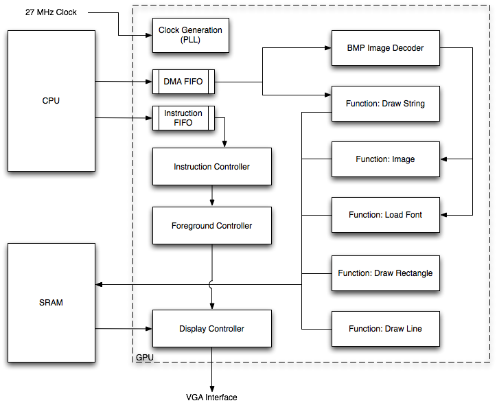

Introduction
The goal for this project was to design a capable, generically definable graphics processing unit (GPU) in hardware that could easily be interfaced to a CPU or other onboard hardware to provide easy and efficient graphics capabilities. The GPU provides support for many useful functions, including drawing points, rectangles, lines, images (via bitmap file decoding), and text. Additionally, the GPU provides dual-layer display capabilities, allowing the user to draw a transparent top overlay over a bottom graphics layer. The hardware was designed to allow for easy inclusion of additional graphics drawing features through use of a standard hardware function interface, and allows a Nios II developer to generate elaborate graphical displays with minimal effort.
As a proof of concept, the graphics engine was demonstrated by developing a rudimentary digital picture frame using a Nios II processor core. The processor drew a selection of images to the screen and overlayed the images with menus a user could use to control various features. Development of the C code for the picture frame was quick and simple, confirming the usefulness of the GPU.
Implementation
High-Level Design |
Instruction Controller |
Display Controller |
Foreground Controller |
Bitmap Image Decoder
Software |
Proof of Concept - Simple Digital Picture Frame
The following section discusses the implementation details of the project, including the graphics engine design and software design considerations.
High-Level Design

High-Level Graphics Engine Design
The graphics engine is comprised of three major components: the instruction controller, the display controller, and the individual function units. Additionally, it is responsible for generating its own clocks (including the required display clock), buffering instructions and memory transfers from the CPU, and managing video memory. The user controls issues commands to the GPU, which activate various functions or control internal registers.
The graphics engine was designed from the beginning to be generically definable. This meant ensuring two key functional points:
- Functions could be added and removed from the hardware easily, without affecting functionality.
- Instruction parameters, including color bit-widths and screen dimensions, were independent from the type of display used.
Additionally, to isolate the user hardware entirely from the GPU operation, the interface from the CPU is buffered through dual-ported FIFOs. This gives the advantage of allowing the CPU to issue multiple non-blocking commands at a time and continue operating, as well as allowing the CPU to operate entirely asynchronously from the GPU.
Instruction Controller
The instruction controller is responsible for decoding user instructions, managing function activity, and updating and distributing internal registers. Instruction control parameters, including displayable screen dimensions, individual color bit-widths, and instruction parameter structures, are defined in gpu_inst_controller.csv and can be redefined as desired.
Each function has a standard interface into the instruction controller that must be met for proper operation. The interface is described in the following table.
| Name | I/O | Description |
|---|---|---|
| func_<name>_start | O | Start signal asserted when an instruction is issued. |
| func_<name>_active | O | Function active signal, asserted while a function is in operation. |
| func_<name>_finished | I | Function finished signal, asserted after the last pixel has been drawn. |
The instruction controller maintains a number of internal registers that can be passed to functions for internal usage. Each register has a dedicated value set instruction. The following table includes descriptions of all of the available registers. Note that color values are defined as instruction parameters, and are not stored between instructions.
| Name | Width | Default Value | Description |
|---|---|---|---|
| layer | 1 | Background | Currently selected layer (foreground or background). |
| fg_en | 1 | 1 | Foreground display enable control. |
| x1 | `GPU_X_WIDTH | 0 | X1 coordinate register. |
| y1 | `GPU_X_WIDTH | 0 | Y1 coordinate register. |
| x2 | `GPU_X_WIDTH | 0 | X2 coordinate register. |
| y2 | `GPU_X_WIDTH | 0 | Y2 coordinate register. |
| r | `INST_COLOR_R_WIDTH | N/A | Red color value. |
| g | `INST_COLOR_G_WIDTH | N/A | Green color value. |
| b | `INST_COLOR_B_WIDTH | N/A | Blue color value. |
Instructions follow the following format: {command, parameter}, where the parameter value depends on the type of instruction (command) being issued. The following table includes the command types for all instructions currently implemented.
| Name | Value | Description | Parameter Type |
|---|---|---|---|
| reserved | 0 | Reserved for future use. | |
| set_xy1 | 1 | Set (X1,Y1) coordinate register. | XY |
| set_xy2 | 2 | Set (X2,Y2) coordinate register. | XY |
| clear | 3 | Clear currently selected layer to black. | Layer |
| draw_rect | 4 | Draw rectangle from (X1,Y1) to (X2,Y2). | Color |
| draw_line | 5 | Draw line from (X1,Y1) to (X2,Y2) using the Bresenham algorithm. | Color |
| draw_image | 6 | Draw bitmap image from DMA at position (X1,Y1). | Priority |
| set_layer | 7 | Set layer select register (0=foreground, 1=background). | Layer |
| clear_rect | 8 | Clear rectangle from (X1,Y1) to (X2,Y2) to black. | Priority |
| show_fg | 9 | Set foreground visibility. | FG Enable |
| load_font | 10 | Load bitmap font using specified transparency color. | Color |
| draw_string | 11 | Draw string from DMA using specified color. | Color |
The following table describes the parameter types used above.
| Name | Structure |
|---|---|
| XY | {Y,X} |
| Color | {r,g,b} |
| Layer | {layer} |
| Priority | {priority,0} |
| FG Enable | {enable} |
Display Controller
The display controller is responsible for driving a parallel display interface and generating vertical and horizontal sync signals to produce the desired resolution and frame rate. In the case of this project, the connected display was a 640x480 pixel, 60 Hz VGA display with 10b color widths. The resolution, synchronization timing (used to set refresh rate), and color widths are defined in disp_controller.csv and can be modified to support most displays.
The display controller provides X and Y position values to the hardware, as well as a signal indicating when it is drawing to the display. The position values indicate the next pixel to be drawn. When drawing, the display controller expects that the color values for the specified pixel position will be provided to it one display clock cycle later.
The display controller is responsible for generating the display horizontal and vertical sync signals (active low), an active low display blanking signal, which is asserted when either sync signal is asserted, and parallel color values.
Foreground Controller
The foreground controller maintains enable bits in local memory for each pixel on the foreground layer. These enable bits allow the display adapter to quickly determine to which memory sector (foreground or background) it should issue a read when drawing the screen. When an enable bit is set for a pixel, the foreground sector is read and its pixel value is displayed on the screen, regardless of the background pixel value. The foreground display layer can be entirely disabled using the show_fg instruction.
Bitmap Image Decoder
The bitmap image decoder is capable of decoding Microsoft BMP-formatted image files into pixel position/color values. The decoder is designed to read from the DMA interface provided by the CPU, but image data can be provided from any source with a 16-bit interface.
The decoder currently supports only uncompressed bitmaps using 24-bit color mode with no color tables, but can be easily modified to support the other formats defined in the BMP specification.
Software
Since the GPU was designed to perform generic graphics operations in dedicated hardware, the C code running on the Nios II is very simple. Graphical operations are performed using wrapper functions which call a series of GPU commands; for example, the C function GPUDrawLine() issues three commands: one to set the starting coordinate of the line, one to set the end coordinate of the line, and one to call the GPU DrawLine function. This allows the processor to quickly issue a graphical instruction and then return to other computation while graphical processing is carried out by the hardware. In situations where the CPU is using a high percentage of its available cycles for some other computation (for example, a physical simulation), the ability to initiate and "forget" a graphical instruction in a few instructions is crucial.
Proof of Concept - Simple Digital Picture Frame
To prove the usefulness of the GPU, a simple digital picture frame was implemented as a proof of concept using a Nios II processor and the GPU. In only a few hundred lines of code, the picture frame was created which displays a rotation of four images at one of three selectable intervals and contains menu support for changing interval, pausing, and toggling the display of picture captions. The GPU was used to create pop-up menus to control these functions. The DE2 board pushbuttons were used to open, navigate, and select from menus. A sample menu is shown below.

An image with the main pop-up menu displayed
Results
The GPU functioned according to expectation. The addition of additional graphics commands is simple, graphics instructions are robust, and the set of supported functions makes the generation of complex menus and graphical interfaces simple. Even complex graphics commands (such as drawing a full-screen image) execute quickly and without any noticeable video artifacts. Using the GPU in a Nios II C program is not difficult, and can be done using a very small number of CPU cycles. All graphics functions appear to be accurate, with the exception of an artifact which appears when diagonal lines are drawn. This artifact appears to be a result of a timing problem between the calculation of new (x,y) coordinates via the Bresenham algorithm and the VGA horizontal sync functions. Finally, since all operations of the GPU occur on-chip, with the exception of VGA output, there are absolutely no safety concerns or reasonable potential for interference with other electronic devices.
Concusion
We experienced a great deal of success in implementing this project. The graphics engine, once completed, performed quite nicely and was capable of performing all of the functions initially intended well. The digital picture frame software, written for demonstration, was quite simple to put together using the C GPU driver. This demonstrated the benefits of the GPU handily, as well as the ease with which a CPU could be interfaced to the hardware to develop a quick graphical display.
A few functions were still in development at the time of this writing, including anti-aliased line drawing using the Wu line algorithm and arc drawing. Those functions will hopefully be integrated with the graphics engine in the short term.
We were very happy with the results of this project, and intend to use the hardware to provide graphics for projects in the future.
Appendix
The hardware for this project is written in Verilog, with header files defined using the Defines Parser developed for the Cornell University Hardware GPS Project. The software was written in C using the Nios II API. A snapshot of the software repository, archived on 12/9/09, is available here: code_12_9_09.zip. The following table includes a listing of all hardware and software files required for the project.
All code is released under the GNU General Public License, version 2. For terms and conditions, please see http://www.gnu.org/licenses/gpl-2.0.html.
| File | Description |
|---|---|
| Hardware | |
| cpu_pll.v | CPU clock generating PLL |
| DE2_TOP.qsf | Top-level Quartus description file |
| DE2_TOP.v | Top-level hardware module |
| debug.vh | Debug definition header file |
| delay.v | Generic delay module |
| delay_1.v | Single-cycle delay module |
| disp_controller.csv (disp_controller.vh) | Display controller header file |
| disp_controller.v | Display controller |
| draw_line.csv (draw_line.vh) | Line drawer header file |
| gpu.v | Graphics processor |
| gpu_dma_fifo.v | DMA FIFO |
| gpu_fg_controller.csv (gpu_fg_controller.vh) | Foreground controller header file |
| gpu_fg_controller.v | Foreground controller |
| gpu_fg_en_ram.v | Foreground enable memory |
| gpu_func_draw_image.v | Draw image function |
| gpu_func_draw_line.v | Draw line function (Bresenham algorithm) |
| gpu_func_draw_rect.v | Draw rectangle function |
| gpu_func_draw_string.csv (gpu_func_draw_string.vh) | Draw string function header file |
| gpu_func_draw_string.v | Draw string function |
| gpu_func_load_font.csv (gpu_func_load_font.vh) | Load font function header file |
| gpu_func_load_font.v | Load font function |
| gpu_inst_controller.csv (gpu_inst_controller.vh) | Instruction controller header file |
| gpu_inst_controller.v | Instruction controller |
| gpu_inst_fifo.v | Instruction FIFO |
| gpu_pll.v | GPU clock generator PLL |
| hex_driver.v | Hex display driver |
| image_decode_bmp.csv (image_decode_bmp.vh) | Bitmap decoder header file |
| image_decode_bmp.v | Bitmap image decoder |
| pixel_map.v | Pixel memory mapping function |
| power_on_reset.v | Power-on reset function |
| strobe.v | Single-cycle strobe module |
| Software | |
| bmp_to_c.pl | Perl bitmap to C array conversion script |
| controller/controller.sopc | Digital picture frame Nios II definition |
| controller/gpu_dma_interface.v | DMA SOPC interface module |
| controller/gpu_dma_interface_hw.tcl | DMA SOPC interface module TCL file |
| controller/graphics_driver/gpu.c | Graphics driver |
| controller/graphics_driver/gpu.h | Graphics driver internal header file |
| controller/graphics_driver/graphics.h | Graphics driver header file |
| controller/graphics_driver/gui.h | GUI header file |
| controller/graphics_driver/menu_handler.c | Menu handler |
| controller/graphics_driver/picture_frame.h | Picture frame header file |
| controller/graphics_driver/picture_frame_main.c | Picure frame display/control |
References
Microsoft BMP specification
Bresenham line drawing algorithm (written by Bruce Land)
VGA timing specification
Defines parser